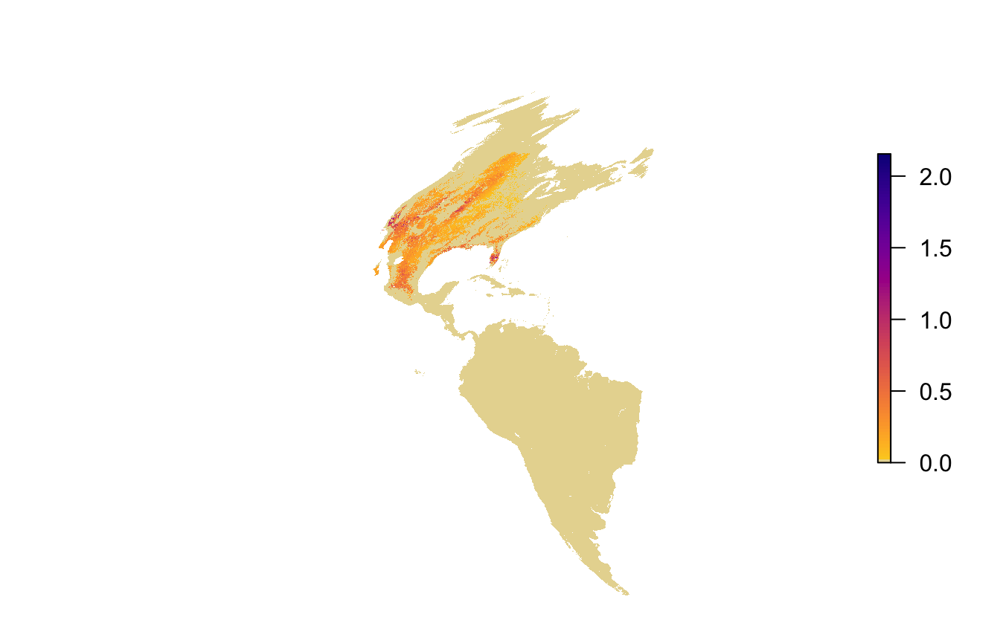
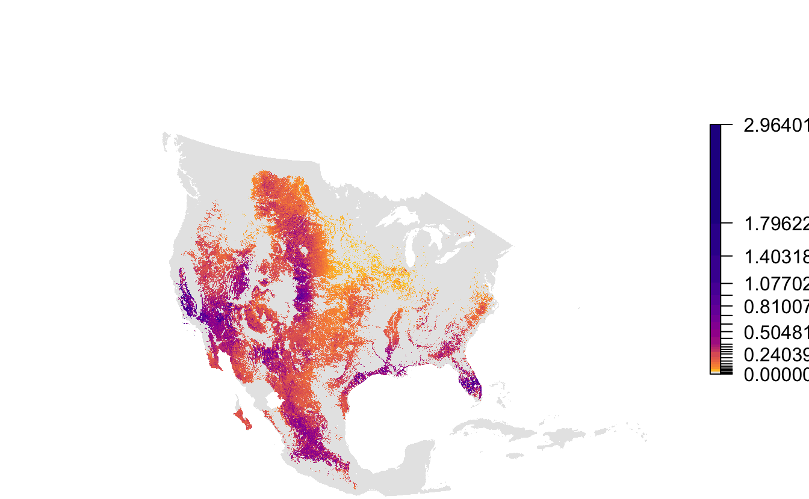

Lesson 1 Data Access
1.1 Objective
To download eBird Status & Trends data using the R package ebirdst, load those data into R and make a simple map.
1.2 Introduction
eBird Status and Trends provides modeled estimates of the distribution and relative abundance of 610 North American breeding bird species over their full annual cycle at high spatial and temporal resolution. All the data behind the maps you’ve likely seen online are freely and openly available, hosted by the Registry of Open Data on AWS. In addition to being able to download the data from AWS, we maintain the ebirdst R package for easily accessing and working with these data. In this lesson, we’ll show you how to access these data and load them into your R session.
Let’s start by loading the ebirdst R package and some additional packages for working with the data.
1.3 Species list
The ebirdst_runs object is a data frame listing all the available species.
glimpse(ebirdst_runs)
#> Rows: 610
#> Columns: 14
#> $ species_code <chr> "bbwduc", "fuwduc", "empgoo", "snogoo", "rosgoo", "gwfgoo", "brant", "c…
#> $ run_name <chr> "bbwduc-ERD2018-EBIRD_SCIENCE-20191105-dc3957b5", "fuwduc-ERD2018-EBIRD…
#> $ scientific_name <chr> "Dendrocygna autumnalis", "Dendrocygna bicolor", "Anser canagicus", "An…
#> $ common_name <chr> "Black-bellied Whistling-Duck", "Fulvous Whistling-Duck", "Emperor Goos…
#> $ breeding_start_dt <date> 2018-05-24, 2018-05-10, 2018-05-24, 2018-06-07, NA, 2018-06-14, 2018-0…
#> $ breeding_end_dt <date> 2018-08-03, 2018-08-17, 2018-06-21, 2018-08-17, NA, 2018-08-17, 2018-0…
#> $ nonbreeding_start_dt <date> 2018-01-18, 2018-11-30, NA, 2018-12-28, 2018-12-14, 2018-12-14, 2018-1…
#> $ nonbreeding_end_dt <date> 2018-03-01, 2018-02-15, NA, 2018-01-11, 2018-01-11, 2018-01-18, 2018-0…
#> $ postbreeding_migration_start_dt <date> 2018-08-10, 2018-08-24, NA, 2018-08-24, 2018-09-07, 2018-08-24, 2018-0…
#> $ postbreeding_migration_end_dt <date> 2018-01-11, 2018-11-23, NA, 2018-12-21, 2018-12-07, 2018-12-07, 2018-1…
#> $ prebreeding_migration_start_dt <date> 2018-03-08, 2018-02-22, NA, 2018-01-18, 2018-01-18, 2018-01-25, 2018-0…
#> $ prebreeding_migration_end_dt <date> 2018-05-17, 2018-05-03, NA, 2018-05-31, 2018-05-17, 2018-06-07, 2018-0…
#> $ year_round_start_dt <date> NA, NA, NA, NA, NA, NA, NA, NA, NA, 2018-01-04, NA, NA, 2018-01-04, 20…
#> $ year_round_end_dt <date> NA, NA, NA, NA, NA, NA, NA, NA, NA, 2018-12-28, NA, NA, 2018-12-28, 20…If you’re working in RStudio, you can use View() to interactively explore this data frame. You can also consult the Status and Trends landing page to see the full list of species.
These seasonal dates are defined through a process of expert review of the weekly Status and Trends maps and define the start and end weeks of each of the following seasons: breeding, non-breeding, pre-breeding migration, and post-breeding migration. If dates are missing for a given season, it means the species did not pass the review process for that season.
1.4 Download data
The function ebirdst_download() downloads data for a single species from AWS. All you need to do is provide the name (common name, scientific name, or species code) of the species you want to download. For this example, I’ll download the data for Loggerhead Shrike.
#> [1] "/Users/mes335/Library/Application Support/ebirdst/logshr-ERD2018-EBIRD_SCIENCE-20191029-48417b13"The function will automatically identify a suitable location to store the downloaded data and return that path, which we captured in the variable sp_path. By default, ebirdst_download() downloads just the raster predictions from Status and Trends for relative occurrence, count, and abundance. We can see the files downloaded with:
list.files(sp_path, recursive = TRUE)
#> [1] "data/logshr-ERD2018-EBIRD_SCIENCE-20191029-48417b13_config.rds"
#> [2] "data/logshr-ERD2018-EBIRD_SCIENCE-20191029-48417b13_srd_raster_template.tif"
#> [3] "data/logshr-ERD2018-EBIRD_SCIENCE-20191029-48417b13_test-data.csv"
#> [4] "logshr-ERD2018-EBIRD_SCIENCE-20191029-48417b13.json"
#> [5] "results/preds/test_pred_ave.txt"
#> [6] "results/stixels/pi.txt"
#> [7] "results/stixels/summary.txt"
#> [8] "results/tifs/band_dates.csv"
#> [9] "results/tifs/logshr-ERD2018-EBIRD_SCIENCE-20191029-48417b13_hr_2018_abundance_lower.tif"
#> [10] "results/tifs/logshr-ERD2018-EBIRD_SCIENCE-20191029-48417b13_hr_2018_abundance_median.tif"
#> [11] "results/tifs/logshr-ERD2018-EBIRD_SCIENCE-20191029-48417b13_hr_2018_abundance_seasonal_breeding.tif"
#> [12] "results/tifs/logshr-ERD2018-EBIRD_SCIENCE-20191029-48417b13_hr_2018_abundance_seasonal_nonbreeding.tif"
#> [13] "results/tifs/logshr-ERD2018-EBIRD_SCIENCE-20191029-48417b13_hr_2018_abundance_seasonal_postbreeding_migration.tif"
#> [14] "results/tifs/logshr-ERD2018-EBIRD_SCIENCE-20191029-48417b13_hr_2018_abundance_seasonal_prebreeding_migration.tif"
#> [15] "results/tifs/logshr-ERD2018-EBIRD_SCIENCE-20191029-48417b13_hr_2018_abundance_upper.tif"
#> [16] "results/tifs/logshr-ERD2018-EBIRD_SCIENCE-20191029-48417b13_hr_2018_abundance_yearround.tif"
#> [17] "results/tifs/logshr-ERD2018-EBIRD_SCIENCE-20191029-48417b13_hr_2018_count_median.tif"
#> [18] "results/tifs/logshr-ERD2018-EBIRD_SCIENCE-20191029-48417b13_hr_2018_occurrence_median.tif"There are some additional files that can be downloaded by specifying tifs_only = FALSE, which may be useful for certain applications. For further details on these data consult the associated ebirdst vignette.
1.5 Load data
Now that we’ve downloaded the data, let’s load these data into our R session. These are raster data (i.e. estimates are provided over a regular grid) and therefore we’ll need the raster package (loaded above) to work with them. There are a variety of layers available, but let’s load the relative abundance estimates. To learn about some of the other layers, consult the associated vignette from the ebirdst package.
abd <- load_raster(product = "abundance", path = sp_path)
abd
#> class : RasterStack
#> dimensions : 5630, 7074, 39826620, 52 (nrow, ncol, ncell, nlayers)
#> resolution : 2963, 2963 (x, y)
#> extent : -2e+07, 943785, -6673060, 1e+07 (xmin, xmax, ymin, ymax)
#> crs : +proj=sinu +lon_0=0 +x_0=0 +y_0=0 +a=6371007.181 +b=6371007.181 +units=m +no_defs
#> names : X2018.01.04, X2018.01.11, X2018.01.18, X2018.01.25, X2018.02.01, X2018.02.08, X2018.02.15, X2018.02.22, X2018.03.01, X2018.03.08, X2018.03.15, X2018.03.22, X2018.03.29, X2018.04.05, X2018.04.12, ...
#> min values : 0, 0, 0, 0, 0, 0, 0, 0, 0, 0, 0, 0, 0, 0, 0, ...
#> max values : 3.08, 3.04, 3.29, 3.31, 3.32, 3.32, 3.31, 3.09, 2.89, 2.53, 2.71, 2.20, 2.23, 2.34, 2.11, ...This is a RasterStack object with 52 layers, each providing a relative abundance estimate for a single week of the year. To see the dates corresponding to the midpoint of these weeks, use:
parse_raster_dates(abd)
#> [1] "2018-01-04" "2018-01-11" "2018-01-18" "2018-01-25" "2018-02-01" "2018-02-08" "2018-02-15" "2018-02-22"
#> [9] "2018-03-01" "2018-03-08" "2018-03-15" "2018-03-22" "2018-03-29" "2018-04-05" "2018-04-12" "2018-04-19"
#> [17] "2018-04-26" "2018-05-03" "2018-05-10" "2018-05-17" "2018-05-24" "2018-05-31" "2018-06-07" "2018-06-14"
#> [25] "2018-06-21" "2018-06-28" "2018-07-06" "2018-07-13" "2018-07-20" "2018-07-27" "2018-08-03" "2018-08-10"
#> [33] "2018-08-17" "2018-08-24" "2018-08-31" "2018-09-07" "2018-09-14" "2018-09-21" "2018-09-28" "2018-10-05"
#> [41] "2018-10-12" "2018-10-19" "2018-10-26" "2018-11-02" "2018-11-09" "2018-11-16" "2018-11-23" "2018-11-30"
#> [49] "2018-12-07" "2018-12-14" "2018-12-21" "2018-12-28"For a given week, these data consist of estimates of relative abundance over a regular 2.96 km grid. For example, we can extract just the 20th week (centered on May 17, 2018) with:
abd[[20]]
#> class : RasterLayer
#> band : 20 (of 52 bands)
#> dimensions : 5630, 7074, 39826620 (nrow, ncol, ncell)
#> resolution : 2963, 2963 (x, y)
#> extent : -2e+07, 943785, -6673060, 1e+07 (xmin, xmax, ymin, ymax)
#> crs : +proj=sinu +lon_0=0 +x_0=0 +y_0=0 +a=6371007.181 +b=6371007.181 +units=m +no_defs
#> source : /Users/mes335/Library/Application Support/ebirdst/logshr-ERD2018-EBIRD_SCIENCE-20191029-48417b13/results/tifs/logshr-ERD2018-EBIRD_SCIENCE-20191029-48417b13_hr_2018_abundance_median.tif
#> names : X2018.05.17
#> values : 0, 2.15 (min, max)1.6 Mapping
Let’s map a quick map of the May 17 abundance data to see what it looks like. The function abundance_palette() gives us access to the color palettes used in the online versions of the maps.
par(mar = c(0, 0, 0, 0))
plot(abd[[20]], axes = FALSE, box = FALSE,
col = abundance_palette(100, season = "weekly"),
maxpixels = ncell(abd))
Notice the extreme distortion in the continents, that most of this map is taken up by areas where the species doesn’t occur, and that there isn’t much resolution in the color palette in areas where it does occur. These raster layers are provided for the entire Western Hemisphere in a sinusoidal equal area projection. This format ensures consistency across the full set of Status and Trends species, but isn’t ideal for mapping the data for a single species. To address this, each Status and Trends data package comes with a set of parameters suitable for mapping the data for that species. Let’s reproduce the above map using the provided extent, projection, and legend bins.
# load mapping parameters
map_pars <- load_fac_map_parameters(sp_path)
# crop and reproject abundance raster
abd_proj <- abd[[20]] %>%
crop(map_pars$fa_extent_sinu) %>%
projectRaster(crs = map_pars$custom_projection, method = "ngb")
# map
par(mar = c(0, 0, 0, 0))
pal <- abundance_palette(length(map_pars$abundance_bins), season = "weekly")
plot(abd_proj,
breaks = c(0, map_pars$abundance_bins),
col = c("#e6e6e6", pal),
axes = FALSE, box = FALSE,
maxpixels = ncell(abd_proj))